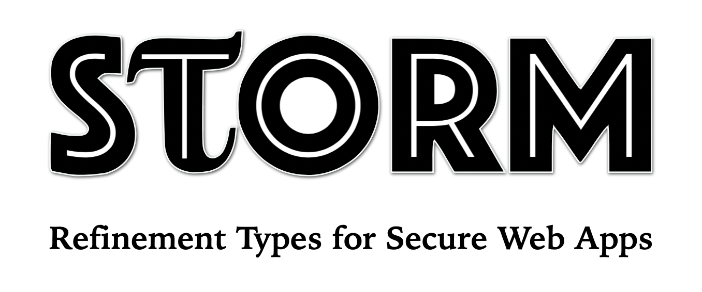
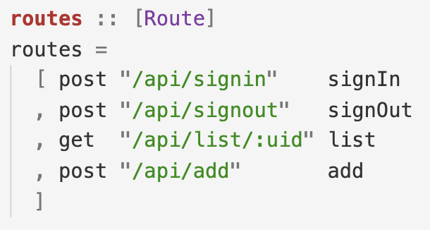
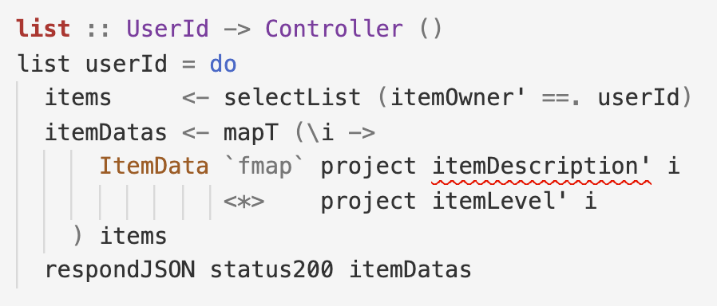
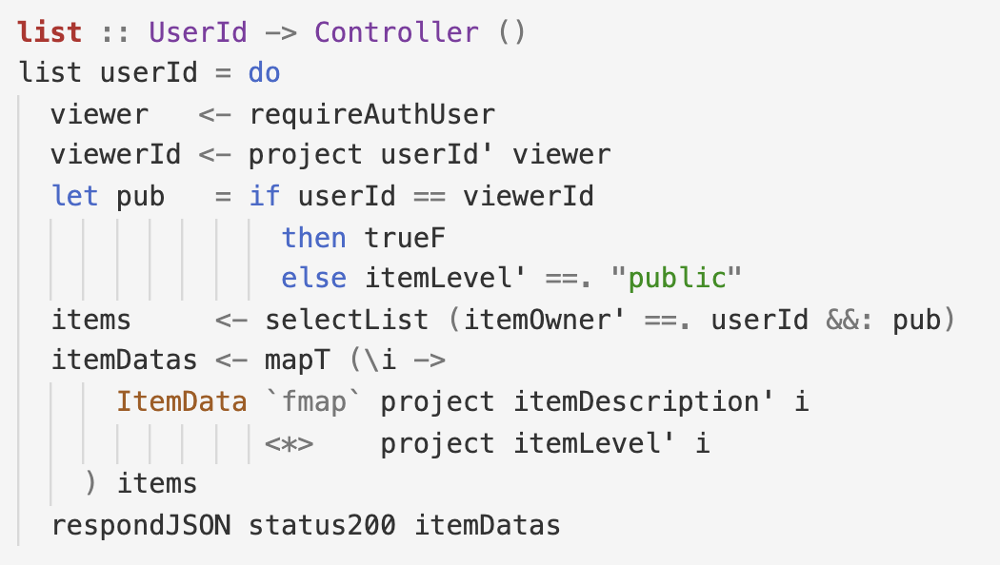

STORM is a Model-View-Controller style framework to build web applications. The framework lets you write expressive and auditable security policies with the data model. The policies are enforced via compile-time refinement type checking with LiquidHaskell.
Step 1: Specify a Model-Policy
First, specify the data model, by naming each database table and its fields (columns). STORM lets you write auditable policies that govern which users can insert rows, or read or update fields of existing rows.
For a shared checklist app, the model describes individual items, and the policy declares that the description can only be read by the item’s owner unless the row is "public".

Step 2: Define a Route

Next, define the Routes defining URLs where clients interact with the server. For example, the checklist app, can have routes for authentication, to add a new item, and to list the items for the user :uid.
Step 3: Implement a Controller
Finally, implement a controller to handle requests for the route by querying the database. STORM is unimpressed: selectList yields all of userId’s items but the viewer can be someone else who may not view those descriptions!


Fix the controller by checking if the viewer is userId and otherwise, restrict the query to public items. STORM now verifies that the controller is policy compliant!
Continue to build the app by iteratively extending the model with tables and policies, and adding routes and controllers. For details, see the demo app…